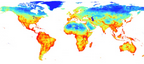

Biodiversity Intactness

Select Location to Buy Select Path to Buy
Biodiversity Intactness レイヤーは、土地利用タイプごとに生物多様性の損失を係数化し、グローバルスケールスケールの土地利用図と対応させることで、生物多様性の損失度をマッピングしたものです。値は0から1をとり、1に近いほど生態系の完全性が高いことを意味します。
データ作成方法と参考文献を見るためにログインする
このデータは、Natural Capital Impact Group によって提案されている、自然インパクトの定量化手法を用いています。ただし、計算とデータの作成はThinkNature Inc. によって実施されました。詳細な方法はこちらで公開されています。